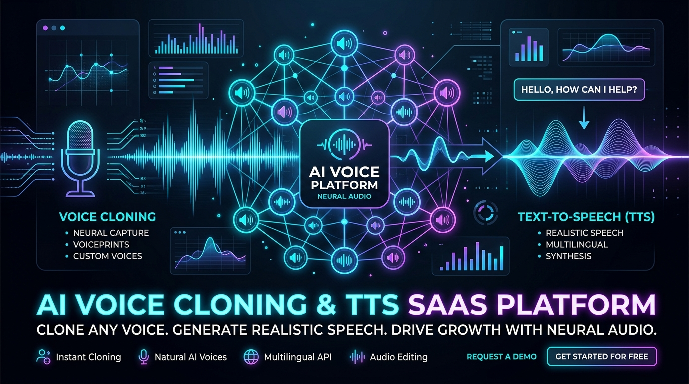

Are you planning to build a custom AI text-to-speech voice cloning app or white-label TTS SaaS platform in 2026? Generative voice technology has evolved from robotic speech synthesis into hyper-realistic, low-latency zero-shot voice cloning. Today, enterprises and startups alike are deploying custom AI voice solutions across customer service automation, podcast generation, audiobooks, accessibility tools, and interactive AI agents.
In this technical guide, our engineering team breaks down the complete architecture, tech stack, streaming latency optimizations, security standards, and cost breakdown required to launch a production-ready AI voice cloning SaaS.

Why Demand for Custom AI Voice Cloning & TTS Software is Skyrocketing in 2026
The global market for synthetic speech generation is projected to cross $10 Billion by 2028. While proprietary platforms like ElevenLabs, Play.ht, and Resemble AI offer powerful APIs, enterprises face three major hurdles with off-the-shelf SaaS products:
- Usage Cost at Scale: Proprietary API pricing per character or per minute becomes prohibitively expensive when streaming millions of audio chunks monthly.
- Data Privacy & IP Ownership: Transporting sensitive voice telemetry or enterprise voiceover scripts to public cloud APIs violates strict data protection regulations in healthcare, finance, and legal sectors.
- Vendor Lock-in & Custom Fine-Tuning: Pre-trained public models often struggle with specialized domain vocabulary, multi-speaker dialogue generation, and zero-latency real-time WebRTC streaming.
Building a custom AI voice cloning application or white-label TTS SaaS platform allows software founders and agencies to capture high-margin recurring subscriptions while offering custom on-premises or private cloud deployments to enterprise clients.
Architectural Overview of a Modern AI Voice SaaS Platform
A production-ready voice cloning platform requires a modular, distributed microservices architecture designed to handle heavy GPU inference workloads, real-time audio chunking, and multi-tenant SaaS billing.
[ Client Application (Web / Mobile) ] | v [ REST / WebSockets / WebRTC API Gateway ] | +--------+--------+ | | v v [ Auth & Subscription ] [ Voice Audio Ingestion & Pre-processing ] (Stripe / JWT / RBAC) (Denoising, Normalization, Silence Trimming) | v [ Neural TTS & Voice Cloning Engine ] (Zero-Shot Diffusion / VITS / XTTS / Tortoise) | v [ Audio Streaming & Cache Layer ] (Redis Audio Chunks / S3 Storage CDN)
1. Audio Ingestion & Feature Extraction
- Reference Audio Upload: Users upload 5–30 seconds of clear speaker audio (WAV/MP3).
- Pre-processing Microservice: Automatically strips background noise, normalizes decibel levels, removes long pauses, and generates 24kHz single-channel mono PCM audio.
- Speaker Embeddings: Extracts deep neural speaker embeddings (e.g., d-vectors or ResNet-based speaker encoders) to define the speaker's timbre, pitch, and cadence.
2. Neural Speech Synthesis Engine (TTS)
- Text Tokenization & Phonemization: Converts input text strings into IPA (International Phonetic Alphabet) tokens to preserve accurate pronunciation of names, acronyms, and technical jargon.
- Acoustic Model: Synthesizes intermediate representations (spectrograms or latent acoustic tokens) using fast auto-regressive models or flow-matching diffusion models.
- Neural Vocoder: Converts spectrograms into continuous audio waveforms (e.g., HiFi-GAN, BigVGAN, or WaveNeRF) with sub-100ms first-byte response times.
Open-Source vs. Proprietary APIs: Choosing Your AI Voice Engine
When building your custom text-to-speech software builder, selecting the underlying inference stack determines your operational margins:
| Criteria | ElevenLabs / Play.ht APIs | Self-Hosted Open-Source Stack (XTTS v2 / Bark / F5-TTS) | | :--- | :--- | :--- | | Development Speed | Immediate (1–2 days API integration) | 3–6 weeks custom model pipeline setup | | Cost per 1M Characters | $15.00 – $30.00+ | $1.50 – $3.50 (Server GPU hosting cost) | | Streaming Latency | ~250ms – 400ms | ~90ms – 180ms (Triton / TensorRT optimized) | | Data Privacy & Compliance | Data processed on vendor servers | 100% On-premise / Private VPC isolatable | | Custom Voice Fine-Tuning | Limited to vendor portal limits | Unlimited full-weights fine-tuning & domain adaptation |
Engineering Recommendation: For early MVPs, use a hybrid architecture—route low-volume requests via high-tier APIs while running high-frequency background streaming jobs on self-hosted GPU nodes running NVIDIA Triton Inference Server with TensorRT-LLM.
Achieving Sub-100ms Latency for Real-Time Streaming AI Agents
For conversational AI agents, interactive IVR systems, and real-time voice assistants, low latency is critical. If your TTS generator takes more than 500ms to begin speaking, the conversational experience feels lagged and artificial.
Key latency optimization techniques implemented by TodayInTech:
- Text Chunking & Streaming Processing: Do not wait for complete paragraphs to render. Sentence-boundary regex splitting feeds text chunks to the model iteratively, sending the first audio frame to the browser in under 120ms.
- WebSocket & WebRTC Audio Protocols: Replace traditional HTTP POST responses with bi-directional WebSockets or WebRTC media channels. Audio buffers stream as raw Float32 arrays directly to client-side Web Audio API contexts.
- GPU Kernel Fusion & FP16/INT8 Quantization: Quantize acoustic models and vocoders using TensorRT to reduce GPU VRAM footprint by 65% and boost inference speed 4x on NVIDIA A10G / L4 GPUs.
Essential Features for a White-Label Voice Cloning SaaS
If you are building a white-label text-to-speech SaaS app to sell to agencies, marketing firms, or enterprise clients, your platform must include:
- Multi-Tenant Account Isolation: Isolated workspaces with custom domain mapping (
app.youragency.com), branded email notifications, and white-labeled UI color themes. - Voice Library & Instant Voice Cloning: Pre-built library of multi-lingual stock voices, plus instant 1-click voice cloning from short audio uploads.
- SSML & Emotion Control: Fine-grained sliders for pitch, speed, emotional intensity (joyful, authoritative, empathetic), and phonetic pause insertions.
- API Gateway & SDK Access: Developer API keys, Webhook notifications upon audio render completion, and SDK packages for Python, Node.js, and Swift.
- Usage Quotas & Billing Integration: Tiered monthly subscription plans integrated with Stripe Billing, tracking character counts, voice slots, and API credits.
Frequently Asked Questions (FAQ)
What is the cost of developing a custom AI voice cloning SaaS app?
A production-ready custom AI voice cloning platform typically costs between $25,000 and $75,000 depending on whether you require self-hosted GPU inference pipelines, custom voice fine-tuning tools, or complex white-label multi-tenancy. At TodayInTech, we offer zero upfront payment—we build your working prototype first, and you pay only after reviewing the working software.
Is AI voice cloning legal and compliant?
Yes, provided your application enforces explicit consent verification. Responsible AI voice applications require voice owners to record a random verification script ("I consent to cloning my voice for account XYZ") before activating a cloned voice profile. Platforms must also implement anti-spoofing audio watermarking (such as SynthID) to prevent deepfake abuse.
How much audio data is needed to clone a high-quality voice in 2026?
With modern zero-shot neural architectures (like XTTS v2 or F5-TTS), a high-fidelity voice clone requires just 5 to 30 seconds of clean, noise-free audio. For studio-grade audiobook narration, fine-tuning a dedicated model on 15–30 minutes of multi-pitch speech yields indistinguishable human speech quality.
Can TodayInTech integrate custom AI voice cloning with VocalFlow or existing telephony?
Yes. TodayInTech specializes in custom AI voice and audio platform development. We can build custom voice engines connected directly to Twilio, Asterisk, WebRTC, or our pre-built VocalFlow AI platform.
Build Your Custom AI Voice Platform with TodayInTech
Looking to launch your own custom AI text-to-speech voice cloning app or ElevenLabs alternative API without taking on technical debt or expensive agency retainers?
At TodayInTech, we operate under a revolutionary Zero Upfront Payment model:
- Step 1: We consult on your product requirements and build a fully functional, interactive software prototype.
- Step 2: You test the live demo, verify the voice audio quality and latency performance.
- Step 3: You pay only after you are completely satisfied with the working code.
Ready to bring your synthetic voice vision to life? Book a Free Demo or explore our VocalFlow Project Showcase today.